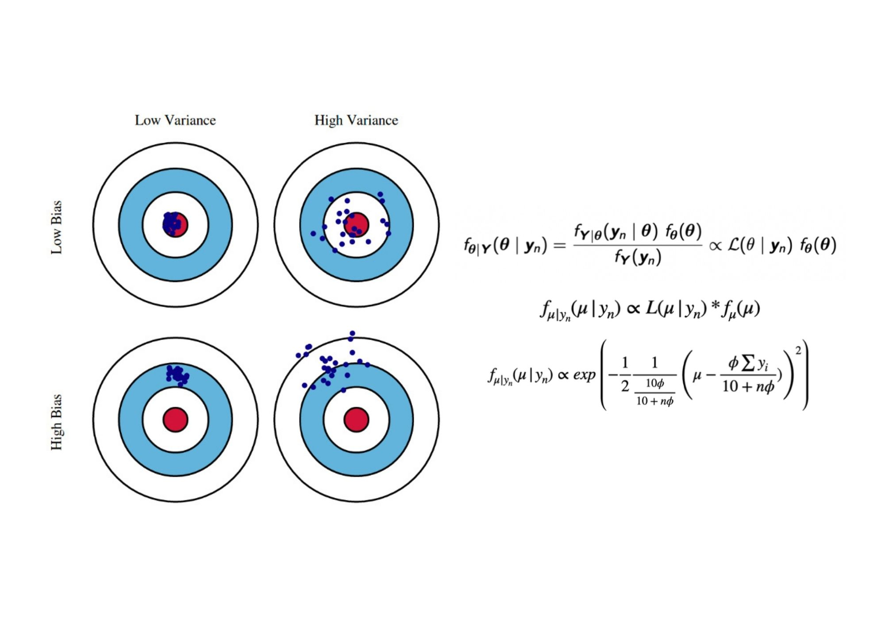

Infectious Disease Modeling R Shiny Application
I worked with two other classmates to develop an R Shiny application to provide users with a tool to create interactive and visual simulations of infectious disease dynamics. Under the current COVID-19 landscape, we felt that providing a means to model trends in disease spread and recovery over time may be beneficial for researchers and the general public. Features include the ability to adjust parameters manually and download the resulting simulation tables. The models we provided are commonly used in epidemiological research. In particular, we adopted the SIR equations found in Cooper (2020) and borrowed our intervention functions from an R package created by Andreas Handel.

Bayesian Estimation and the Bias-Variance Tradeoff
As part of a final project, I worked with two other students on a presentation to demonstrate why unbiased estimators may not always be preferred through an examples that compares maximum likelihood estimators and Bayesian estimators, the latter of which can result in a lower mean squared error despite having a higher measure of bias than its counterpart. The popularization of this concept and of Bayesian estimators revolutionized the field of statistics during the 1980s and has found wide application in artificial intellgience and machine learning.

Exploratory Data Analysis: Investigation on Factors that Determine Airbnb Price and What Makes an Airbnb a Worthwhile Investment
For my Statistical Programming in R midterm project, I put myself in the shoes of an investor and used publicly available Airbnb data to conduct an exploratory data analysis. My primary goal was to examine what factors may contribute to Airbnbs having a higher price and higher nightly occupancy rate, and as a result make my fictional investment more successful if I were considering becoming an Airbnb host.